H1
Le niveau d'études influence la vulnérabilité à la désinformation : les joueurs les plus diplômés seraient les moins affectés.
Jeux de société : TRUTH — évaluer un jeu sérieux contre la désinformation
Article du 11 mai 2026 — Zoé Schliefer Berlioux, Jan De Graeve, Sauryanne Massoudi, Ellie Chalmeau. Mots clés : jeux sérieux, désinformation.
L'équipe a conçu T.R.U.T.H., un jeu de société pédagogique (serious game) destiné aux adultes et jeunes adultes, pour renforcer leurs défenses face à la désinformation. L'article évalue son efficacité pédagogique en cherchant à valider ou invalider plusieurs hypothèses, et présente le processus de production.
Contexte. L'information circule en abondance et est manipulée par de nombreux acteurs ; sa crédibilité devient moins stable, d'où la nécessité d'interroger ce à quoi l'on est exposé.
Choix du format. Face à la rareté des ressources cognitives, l'équipe a opté pour un jeu de société, afin de dédramatiser le sujet tout en expliquant les mécanismes de la désinformation.
Question de recherche. Dans quelle mesure un dispositif ludo-pédagogique comme T.R.U.T.H. peut-il constituer un outil préventif efficace face aux dynamiques de diffusion de fausses informations ?
Le niveau d'études influence la vulnérabilité à la désinformation : les joueurs les plus diplômés seraient les moins affectés.
L'apprentissage par le jeu favorise mieux la compréhension des concepts clés qu'une méthode passive.
La diffusion de l'information dans le jeu dépend moins de la véracité des news que des objectifs personnels et du profil des joueurs.
Méthodologie mixte : données quantitatives (échelles psychométriques, scores de jeu) et qualitatives (observations comportementales).
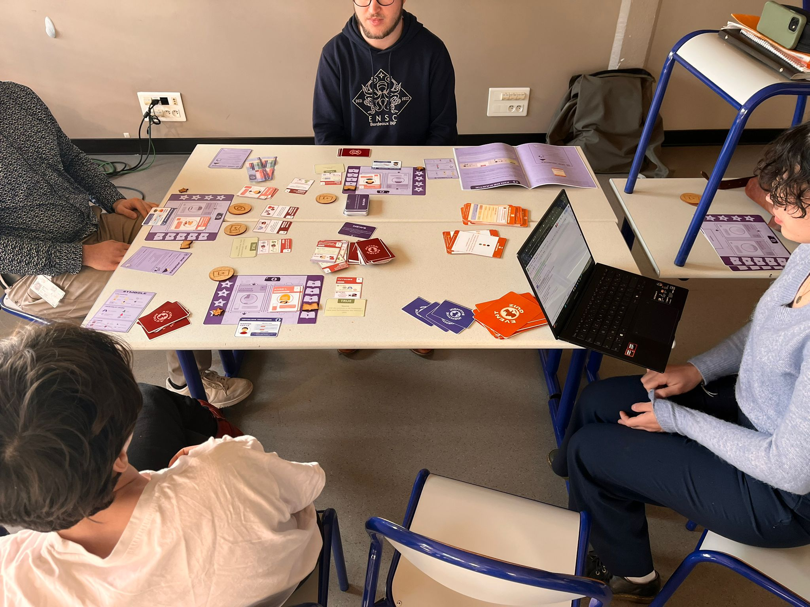
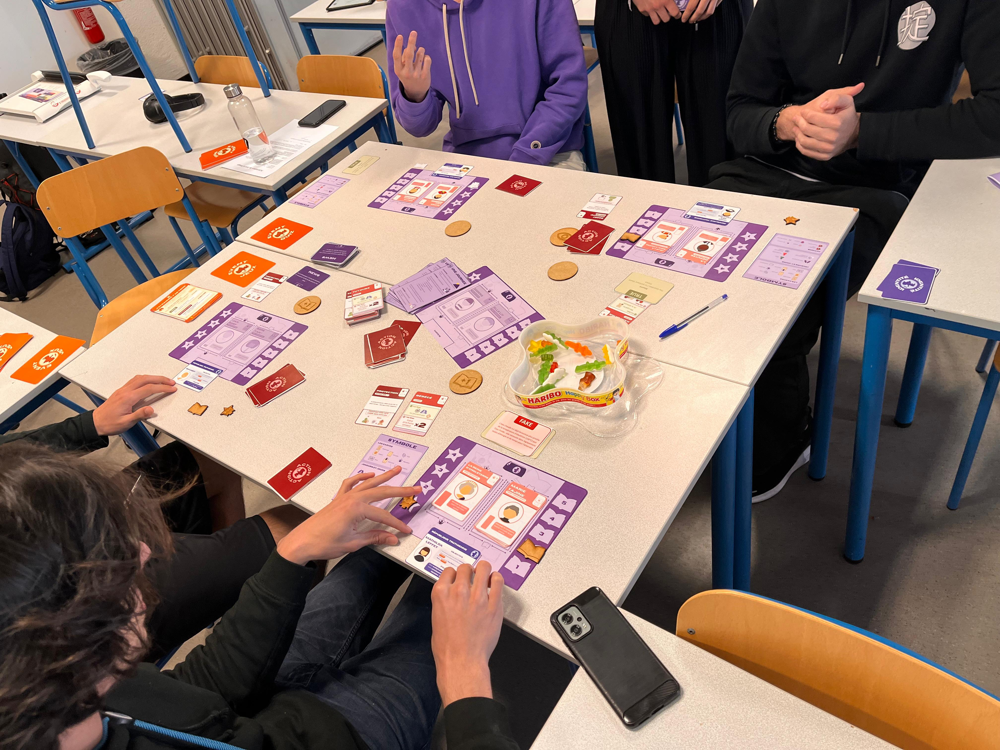
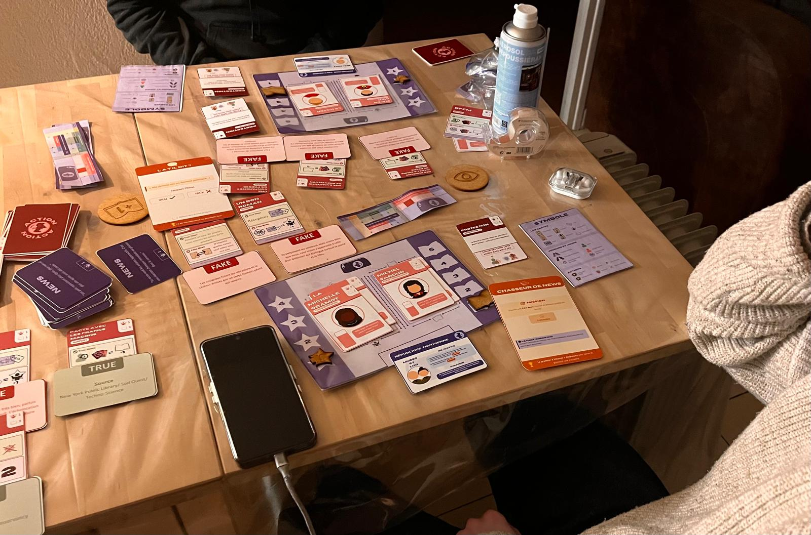
Le jeu TRUTH : plateau, fiches Identité (rôles et objectifs), cartes News (vraies ou fausses), cartes Action, cartes Événement (déclencheurs de quiz et de jeu). Les règles sont présentées par une vidéo identique pour chaque groupe ; les sessions sont filmées avec consentement signé.
Questionnaires pré et post-test (Google Forms, anonymisés par code participant), en quatre axes :
Grille d'observation (notée de 1 à 5 a posteriori, d'après les notes, citations et vidéos) : rapport aux fausses informations (performance aux quiz, leadership, suivisme ou conviction, repérage vocalisé des pièges) et apprentissage dans le jeu (posture critique et autocritique, intérêt pour la sensibilisation, lien avec la vie réelle).
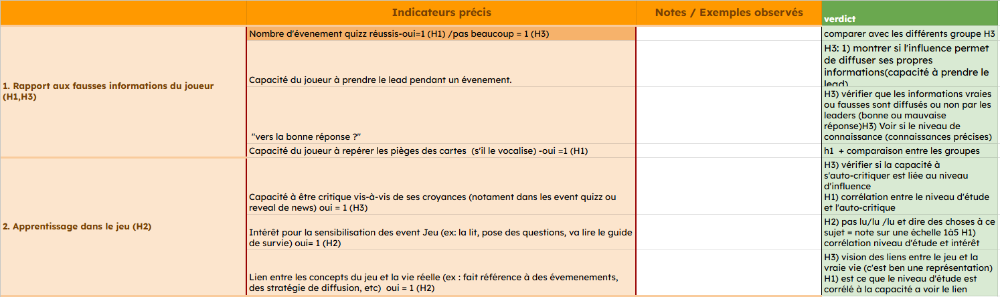
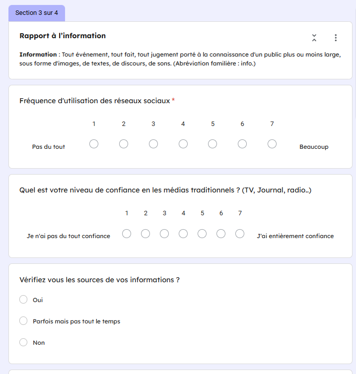
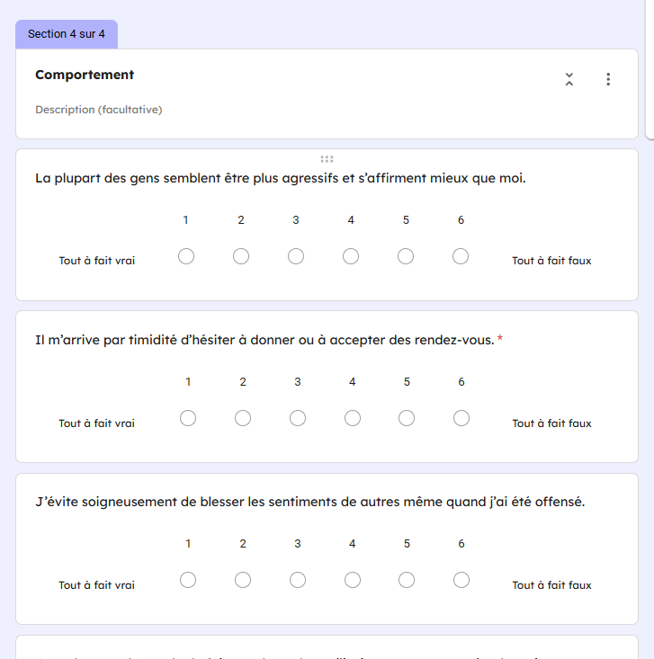
Données centralisées et anonymisées. Tests adaptés aux petits effectifs (notamment Mann-Whitney), réalisés avec JASP, Excel, Orange et R.
ACP. Les deux premiers axes expliquent 57,28 % de la variance (Dim 1 : 33,45 % ; Dim 2 : 23,83 %). Groupe A (bac+5 à 8) : confiance envers les médias M = 4,3, contre M = 3,5 pour le groupe B (bac+2). Vérification des sources : M = 1,0 pour A contre 1,7 pour B. Le groupe A est plus homogène, le groupe B plus fragmenté.
Auto-évaluation et performance. Au pré-test, l'auto-évaluation de la capacité à démasquer les fake news est de 4,5 pour B contre 4,3 pour A. En jeu, le score moyen de détection est de 3,6 pour A contre 2,46 pour B.
Corrélations. Niveau d'études et repérage des pièges : r = 0,49. Niveau d'études et intérêt pour la sensibilisation : r = 0,61 (groupe A à 4/5, groupe B à 1,33/5).
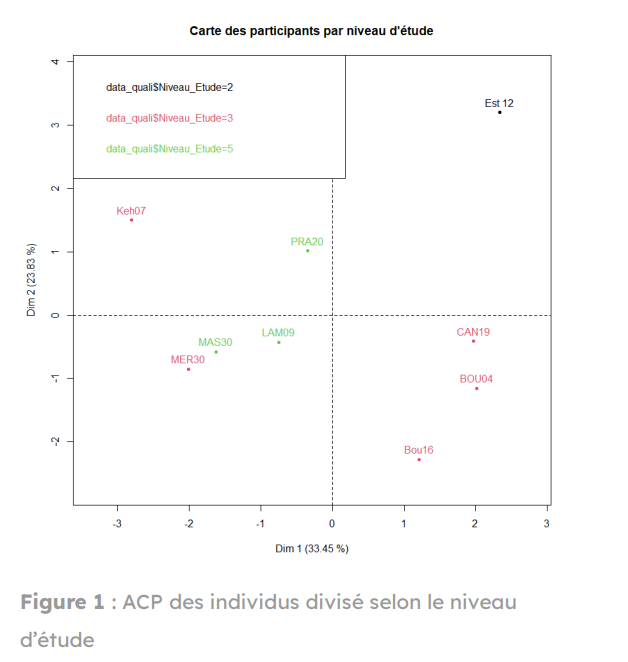
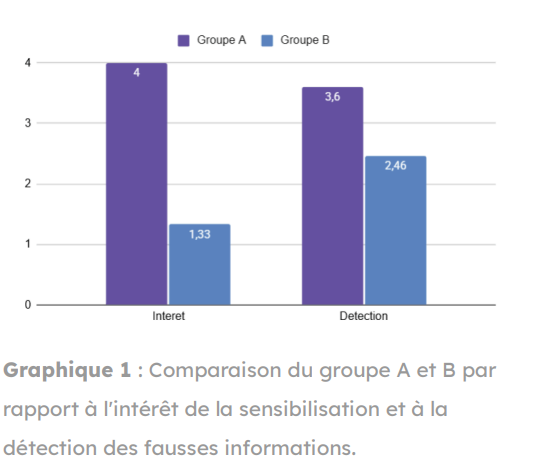
Progression brute (scores différentiels moyens, post-test moins pré-test) : aucune différence intergroupes significative (p > 0,05).
| Variable | Groupe Jeu (M ± ET) | Groupe CM (M ± ET) | U | p |
|---|---|---|---|---|
| Détection ID Δ | −0,11 (± 2,09) | 0,13 (± 0,99) | 98,0 | 0,689 |
| Confiance médias Δ | 0,22 (± 0,97) | −0,21 (± 0,72) | 131,0 | 0,290 |
| Confiance réseaux sociaux Δ | 0,22 (± 1,72) | −0,29 (± 0,90) | 131,0 | 0,290 |
Magnitude du changement (valeur absolue de Δ). Détection des fake news : Jeu M = 1,67 (ET = 1,00) contre CM M = 0,62 (ET = 0,8), U = 169,0, p = 0,009. Confiance envers les réseaux sociaux : U = 159,0, p = 0,027.
Aspect ludique (groupe Jeu, n = 9). Plaisir ludique et amélioration de la détection : r = 0,37 (modérée, à prendre avec précaution vu l'échantillon). Plaisir ludique et confiance envers médias et réseaux sociaux : r ≈ 0.
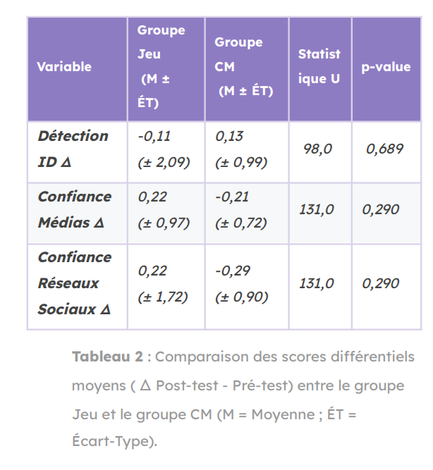
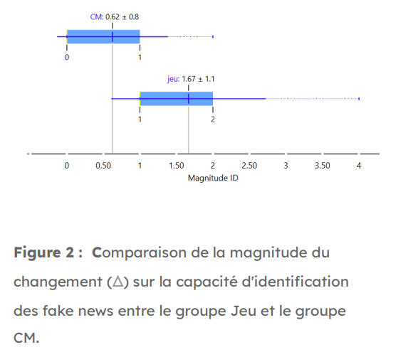
Répartition (groupe Jeu, n = 9) : Inhibé n = 4 (scores Rathus de −7 à −4), Neutre n = 3 (2 à 3), Affirmé n = 2 (jusqu'à 4). Le score initial (−10 à 10) est ramené sur 0 à 5 par f(x) = ¼x + 2,5.
Profil et bonnes réponses. Joueurs inhibés : r = 0,945 — plus ils sont sûrs d'eux, plus ils ont de bonnes réponses. Échantillon total : r = 0,643 — les joueurs affirmés ne cherchent pas systématiquement la bonne réponse.
Profil et prise de lead. Corrélation globale r = 0,816, avec des valeurs aberrantes expliquées par l'environnement de jeu : les joueurs les plus leaders étaient les plus affirmés.
Profil et autocritique. Constat visuel uniquement : les joueurs les moins affirmés se remettent davantage en question.
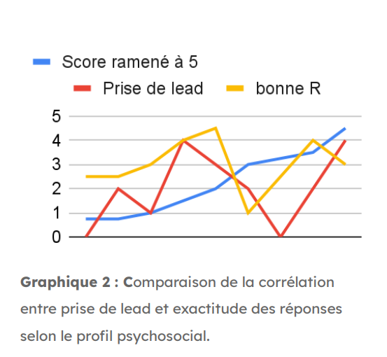
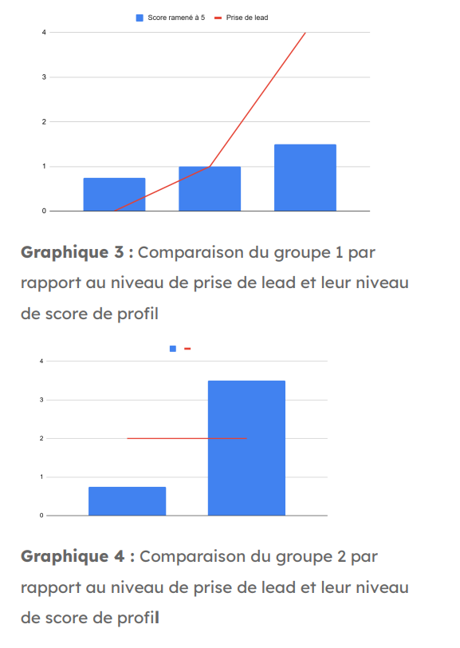
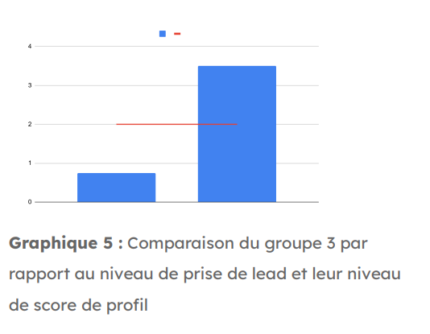
Limites : échantillons réduits et déséquilibrés (n = 9 contre n = 24) ; représentativité limitée du bac+3 au doctorat ; un expérimentateur ne pouvait pas toujours jouer, ce qui a pu affecter les réponses ; biais d'exposition (10 minutes contre 1 heure) et biais de volontariat.
Les hypothèses sont confirmées avec réserve. Le niveau d'études est associé à des approches différentes face à l'information. Le jeu semble produire davantage de changements et améliorer la détection des fake news grâce à son aspect ludique. Il illustre aussi des dynamiques de diffusion où certains acteurs favorisent leurs intérêts plutôt que la véracité, et peut ainsi servir de mise en garde.
Corriger les biais de durée d'exposition (10 minutes contre 1 heure) et de volontariat.
Les annexes figurent dans l'article complet (PDF).